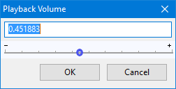

Mixer Toolbar
- Click on the toolbar image below to see this toolbar displayed in context of the default upper tooldock layout.
- Recording Volume Slider: Sets the recording volume.
- Playback Volume Slider: Sets the playback volume.
Recording Slider
To locate the system mixer, see the help on our Wiki for Windows (right-click the speaker icon by the system clock), Mac (use /Applications/Utilities/Audio MIDI Setup or the system Sound Preferences) or Linux (use ALSAmixer or PulseAudio Volume Control).
- Note that Macs in most cases do not permit volume adjustment of USB audio devices. Use the gain control on the USB device if it has this, or adjust the level that is going into the USB device.
This is slider with the microphone icon. It controls the level of the currently selected "Recording Device" in Device Toolbar. Inputs can also be chosen at "Recording Device" in Devices Preferences, in the operating system mixer or in any control panel that the soundcard may have. The Recording Slider should then control that input.
After selecting the required recording source, use the recording slider in conjunction with the recording level meters on the Meter Toolbars to set the correct recording level before starting to record for real.
If your input sounds distorted, lower the recording slider until no distortion can be heard, also making sure the clipping indicators on the recording meter do not light up.
Playback Slider
This is the slider with the loudspeaker icon. It enables you control the volume at which you listen to the mix of your project. This is a purely a "monitor" control. It does not affect the level of your mix and hence does not affect the level that audio is exported at. Adjusting the playback slider will not help if your mix is clipped. The playback slider does not affect the levels indicated by the playback meters which do reflect the level of the mix.
Should your playback sound distorted, the distortion usually comes from clipping of your project's mix. You actually need to reduce the level of your tracks. It is suggested you reduce every track by the same amount using the gain sliders in the Track Control Panel.
Precise Volume Adjustment
- 
Double-clicking on the recording or playback volume slider will bring up the Recording Volume or Playback Volume window. Here you can make much more precise adjustments with the slider or enter a value in the text field. You can also set a keyboard shortcut to bring up either of these windows.